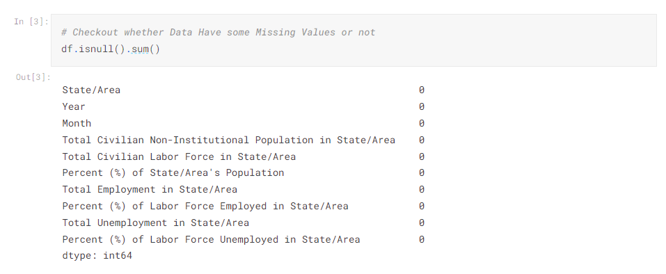
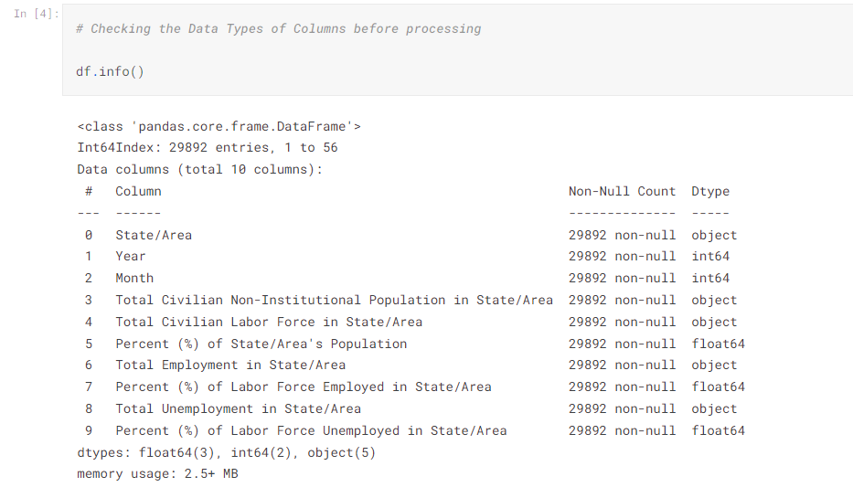
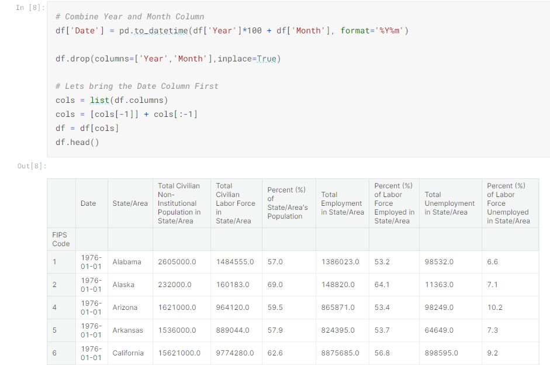
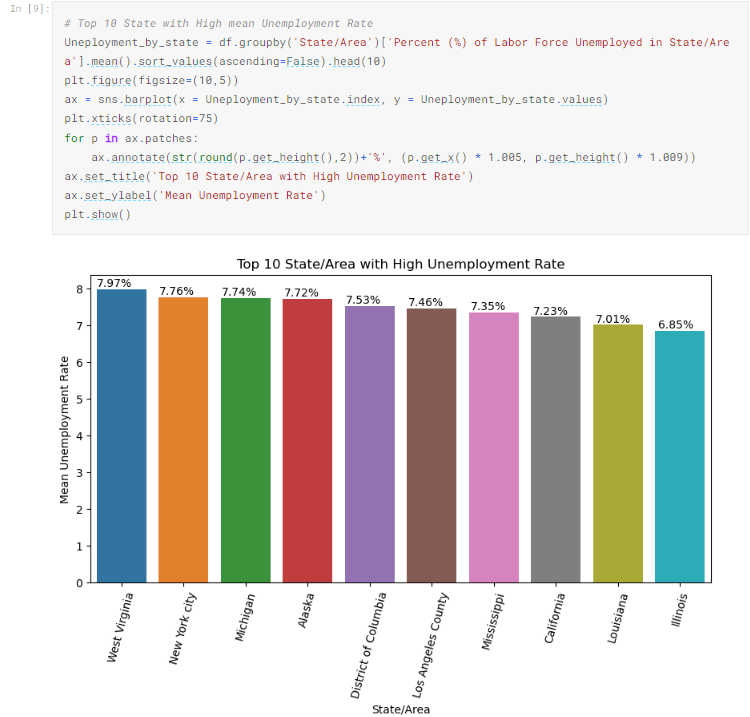
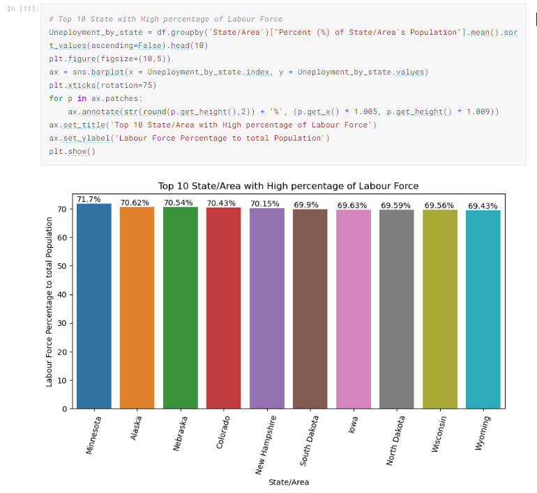
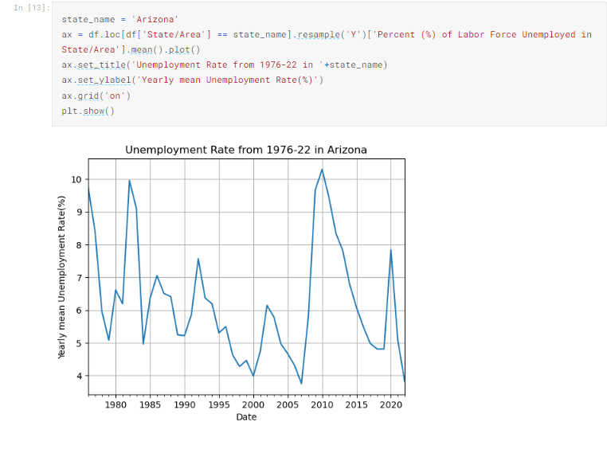
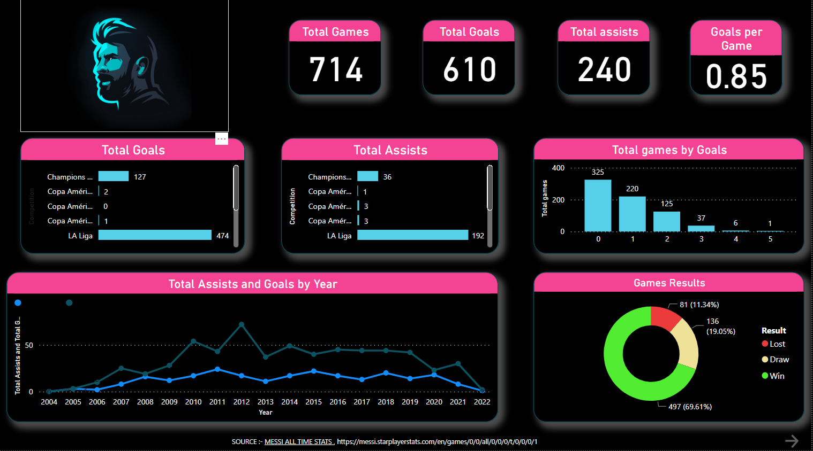
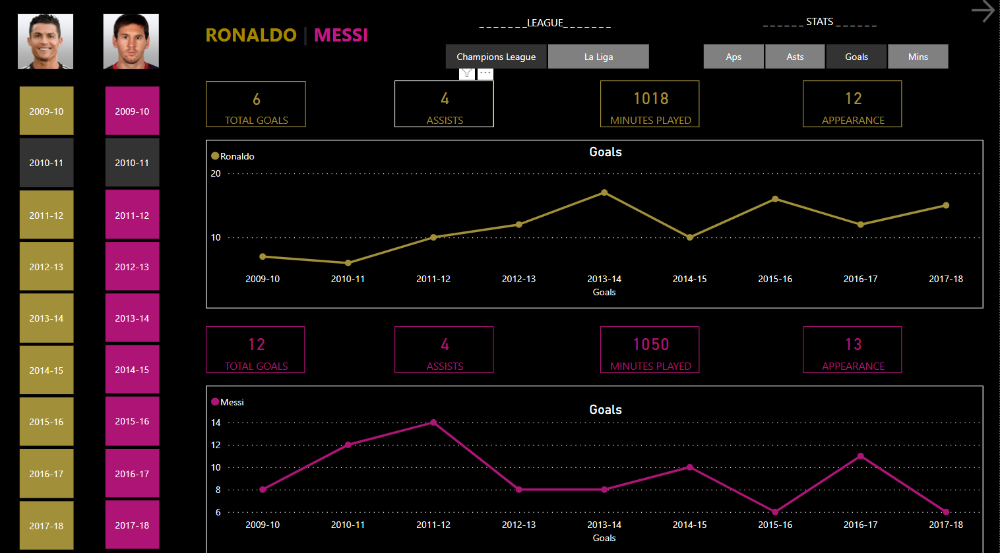
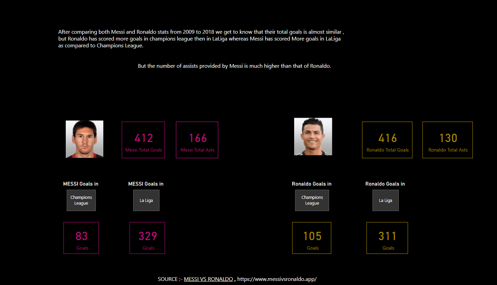

My Projects
Current Project
     The objective is to use Python to create a project using the unemployment data provided in the link https://www.kaggle.com/datasets/justin2028/unemployment-in-america-per-us-state is to create a dashboard that provides insights into unemployment trends for different US states. The dashboard should include various KPIs and visualizations to help the user understand and analyze the data. Some possible objectives for this project could be:
To analyze the unemployment rates across different US states and identify states with high or low unemployment rates.
To track the unemployment trends over time by month and year and identify any patterns or trends.
To compare the unemployment rates across different states and months
To understand the impact of the COVID-19 pandemic on the unemployment rates during initial phase across different US states and demographic groups.
Data Visualization using Python


Creating a histogram and scatterplot : The project demonstrates how to use Python and various libraries (including Pandas, Matplotlib, and Seaborn) to perform data analysis and create visualizations using the Iris dataset
Github LinkPower-bi Project
   A Power BI project comparing Messi and Ronaldo's stats from 2009 to 2018 , involve importing data from different sources such as websites or CSV files, cleaning and transforming the data, creating visualizations and interactive dashboards to help users explore and analyze the data.
Data Collection: Collect data on Messi and Ronaldo's performance stats, such as goals scored, assists, shots taken, etc. for the years 2009 to 2019 from reliable sources.
Cleaning and Transformation: Clean and transform the data by removing any duplicate or irrelevant data, filling in missing values, and merging the data sources into one cohesive dataset.
Data Modeling: Create a data model that defines the relationships between the different tables of data, and add calculated columns and measures as needed to perform calculations and analysis.
Data Visualization: Use Power BI's visualization tools to create charts, tables, and other visuals that display Messi and Ronaldo's stats side by side, highlighting differences and similarities in their performance over the years.
Dashboard Creation: Create an interactive dashboard that allows users to explore the data in different ways, filtering by year, metric, or player, and displaying the information in a variety of visual formats.